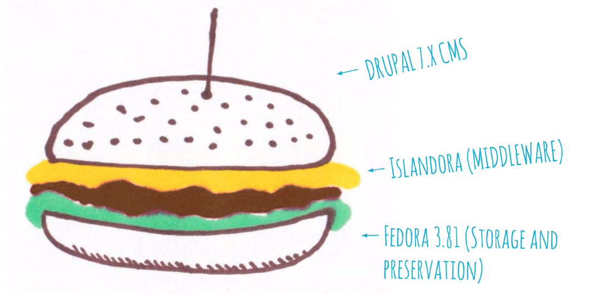

Intro to Islandora CLAW
Islandora CLAW is the project name for development of Islandora to work with Fedora 4, also known as Islandora 7.x-2.x. To fully understand Islandora CLAW, it is best to start by looking at its contrasts to the previous version of Islandora, known as 7.x-1.x.
Islandora 7.x-1.x works as a bridge between Drupal 7.x and Fedora 3. Put simply, Islandora 7.x-1.x is middleware between Fedora 3 and Drupal 7.x, sometimes expressed as a hamburger:
Islandora 7.x-1.x (with Fedora 3)

Islandora CLAW (or Islandora 7.x-2.x) does more than simply replace that base layer with Fedora 4. It is a total re-architecting of the interaction between the various pieces. Rather than a hamburger, Islandora CLAW is a chimera:
Islandora CLAW (with Fedora 4)
Or, for a diagram that doesn't involve food or animals:
This new structure has several advantages:
- Parcelling out the various services and dependencies allows for more horizontal scalability
- Changing the relationship between Drupal and Fedora allows for a more flexible approach to front-end management (i.e, it need not be Drupal) while also taking much greater advantage of features available from Drupal (i.e, Fedora objects are treated more like nodes, for the purposes of using Drupal contrib modules. Many Islandora 7.x-1.x modules are redundant in Islandora CLAW because they reproduce existing Drupal contrib modules that can be used out of the box in Islandora CLAW).
- Easier to keep up-to-date as not all pieces must be versioned together.
- Installations tools (Ansible, Docker, Vagrant) can automate uniting the pieces in a simple, clean installation process. Islandora has always been a turn-key repository solution, in the sense that it needs no customization once installed. With Islandora CLAW, that installation process is much smoother, with automated solutions that can be used in production.
Ecosystem
Alpaca
Event driven middleware based on Apache Camel that synchronizes Fedora 4 with Drupal.
Chullo
A PHP client for Fedora 4 built using Guzzle and EasyRdf.
CLAW
A container with references to all of the other components that make up Islandora CLAW. Also contains documentation and project discussions.
Crayfish
Top level container for the various Islandora CLAW microservices.
Islandora
The Drupal modules associated with CLAW. Work is underway to have this as a project on drupal.org.
PDX
Top level container for the various PCDM specific Islandora CLAW microservices.
Why Switch?
Islandora 7.x-1.x is a tried and tested product with a vibrant user and contributor community and many tools and add-ons available to customize and expand its uses. Islandora CLAW is a major departure, representing a great deal of work both in development of the software, and to migrate and upgrade existing Islandora sites. So why make the change?
Fedora
The primary motive for moving to Islandora CLAW is to stay current with the repository layer of our ecosystem. Moving to Fedora 4 is vital for the long-term utility of the project.
- Fedora 3 is End-of-Life and has not been supported since 2015. This means that there will be no improvements, bug fixes, or security patches released for the software, drastically increasing individual maintenance needs for adopters.
- Fedora 3 experiences significant slowdown when repositories reach a large (millions) number of objects. Fedora 4 is much more scalable, and is specifically engineered to be horizontally scalable in ways that Fedora 3 cannot.
Drupal
Drupal 8 has been officially released and development has begun on Drupal 9. Official Drupal policy will see Drupal 7 become unsupported when Drupal 9 is released, putting it in the same precarious territory as Fedora 3.
The initial phases of Islandora CLAW development worked with Drupal 7 as a front-end, but Islandora CLAW has been architected with a pivot to Drupal 8 in mind from its very inception. As of June, 2016, Islandora CLAW development has pivoted fully to Drupal 8, ensuring that when the Islandora Community is ready to make the move, there will be a version of Islandora that functions with the latest and best-supported versions of both our front-end and repository layers by pairing Drupal 8 with Fedora 4.
Community-Driven Design
The Islandora community has grown significantly since the project began, both in terms of users and contributors. For the first time, we are in a position to have a truly community-driven development process, in which any Islandora user can participate at whatever level fits their interests and abilities. Islandora CLAW has worked with the broader Islandora community to solicit use-cases, put forward prospectuses and project plans for review and editing, and has been developed with a mix of funding from Islandora Foundation members and volunteer developers working on sprints.
Islandora CLAW is developed by the Islandora community, for the Islandora community. As a member of the Islandora community, you can help to steer the direction it takes.
Linked Data
Linked Data is a big concept. A definition by Tim Bernes-Lee from 2006 articulates the basic idea in the context of the "Semantic Web":
It is about making links, so that a person or machine can explore the web of data. With linked data, when you have some of it, you can find other, related, data.
Like the web of hypertext, the web of data is constructed with documents on the web. However, unlike the web of hypertext, where links are relationships anchors in hypertext documents written in HTML, for data they links between arbitrary things described by RDF. The URIs identify any kind of object or concept. But for HTML or RDF, the same expectations apply to make the web grow:
Use URIs as names for things
Use HTTP URIs so that people can look up those names.
When someone looks up a URI, provide useful information, using the standards (RDF*, SPARQL)
Include links to other URIs. so that they can discover more things.
LDP is an official W3C recommendation. According to their spec, Linked Data Platform (LDP) defines a set of rules for HTTP operations on web resources, some based on RDF, to provide an architecture for read-write Linked Data on the web. Put more simply: An LDP server is a web server that lets you manage relationships in RDF by creating URLs you can perform CRUD (Create Read Update Delete) operation on:
http://my_url/some_resourcehttp://my_url/some_resource/childrenhttp://my_url/some_resource/children/child_resource<> prefix:isChildOf <http://my_url/some_resource>
An LDP server also lets you request the RDF graph for a resource with varying levels of additional information for discovery:
- The resource itself
- The resource plus child resources
- The resource plus all other resources that reference it (inbound references)
- The resource plus children plus inbound references
Fedora 4 is an LDP implementation. It stores metadata using RDF (Resource Description Framework), a standard format for data interchange on the web. RDF data is formatted as triples, like so: <resource_uri> <predicate_uri> <object_uri> and can be exported in many different formats:
- JSON-LD
- RDF/XML
- Turtle
- N-Triples
Working with RDF is not entirely new in the Islandora/Fedora context, as RELS-EXT and RELS-INT have always been RDF/XML. Related objects can be included in RDF, so it functions as a graph you can traverse in order to discover more information.
Example: Dublin Core as XML and RDF using the dc namespace
Dublin Core XML you store with the resource.
<?xml version="1.0"?>
<metadata
xmlns="http://example.org/myapp/"
xmlns:xsi="http://www.w3.org/2001/XMLSchema-instance"
xsi:schemaLocation="http://example.org/myapp/ http://example.org/myapp/schema.xsd"
xmlns:dc="http://purl.org/dc/elements/1.1/">
<dc:title>
Islandora
</dc:title>
<dc:description>
Islandora is an open-source software framework designed to help institutions and organizations and their audiences collaboratively manage, and discover digital assets using a best-practices framework.
</dc:description>
</metadata>
vs RDF (which is actually properties of the resource)
@prefix dc: <http://purl.org/dc/elements/1.1/> .
<http://islandora.ca/> dc:title "Islandora" ;
dc:description "Islandora is an open-source software framework designed to help institutions and organizations and their audiences collaboratively manage, and discover digital assets using a best-practices framework." .
Interoperability
Islandora CLAW works with the Portland Common Data Model, "a flexible, extensible domain model that is intended to underlie a wide array of repository and DAMS applications." What does this mean in practice? Objects stored in Islandora CLAW will have a data model that can be recognized by Hydra and other custom Fedora 4 based repository heads, and vice versa. By working together with the Hydra and Fedora communities, we can leverage a broader community of developers, librarians, and other digital repository users to build better tools and share resources.